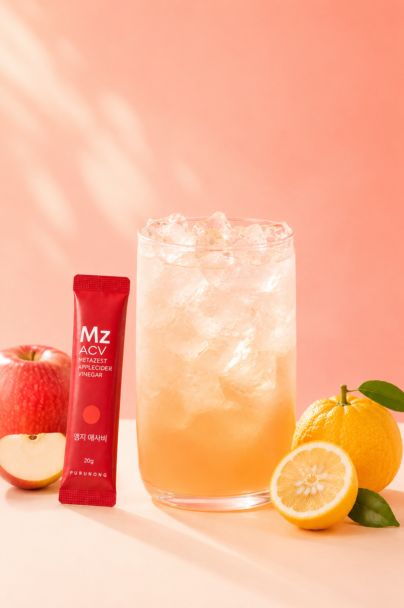
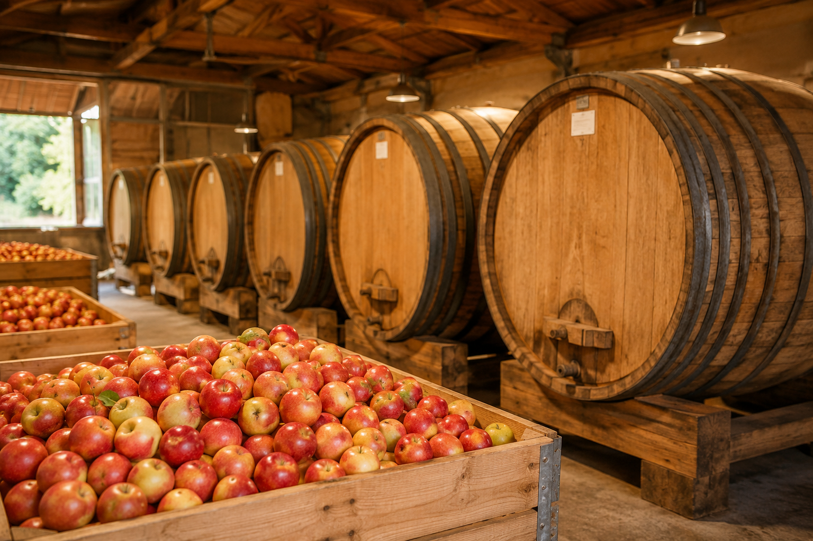
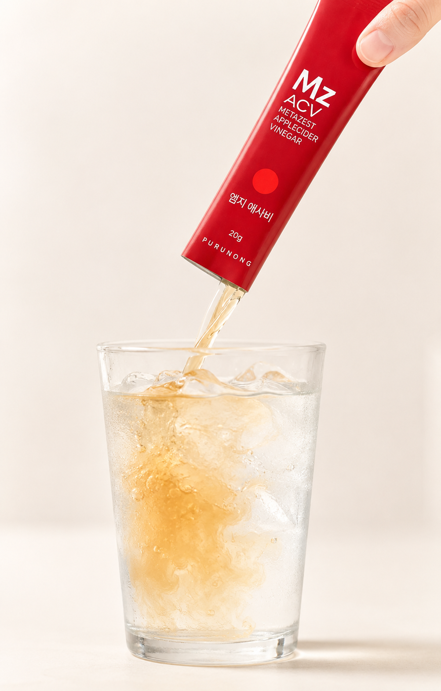
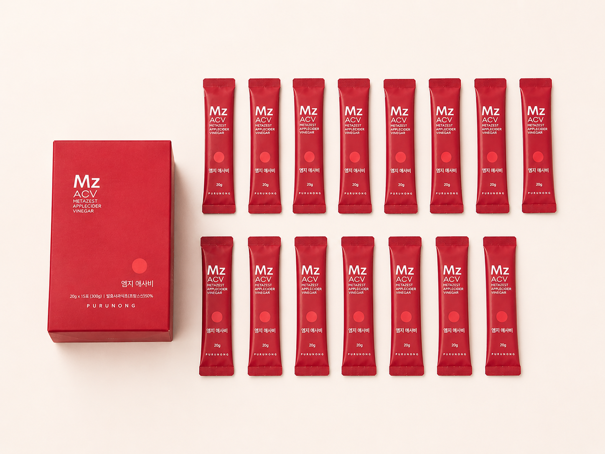

1797년 설립된 프랑스 기업
CHARBONNEAUX
BRABANT
프랑스에서 식초와 소스류를 만들어 온
샤르보노-브라방의 애플사이다비니거 원료를 사용합니다.
PURUNONG MZ ACV
새콤한 애사비에 상큼한 유자향을 더한
20g 액상 스틱
사과·음료·잔은 연출용이며, 실제 구성은 20g 스틱 15포입 1박스입니다.
WHY WE MADE IT
강한 식초 맛과 향이 부담스러워
몇 번 마시고 남겨둔 애사비.

YUZU FLAVOR
애사비의 산뜻한 산미에
달콤하고 상큼한 유자향을 더해
한 잔을 더 기분 좋게.
사과·유자·잔은 맛을 표현한 연출 소품이며 실제 구성에 포함되지 않습니다.
FROM APPLE TO ACV
1797년 설립된 프랑스 기업
프랑스에서 식초와 소스류를 만들어 온
샤르보노-브라방의 애플사이다비니거 원료를 사용합니다.
사과를 발효주로 만든 뒤 다시 초산 발효하는
두 번의 발효 과정을 거칩니다.

‘초모’란? 식초 발효 과정에서 형성되는 발효 성분을 설명할 때 쓰는 표현입니다. 본 제품은 살균제품으로, 완제품의 생균을 뜻하지 않습니다.
프랑스산 유기농
발효사과식초 함유
한 포에 담긴 원료 수치까지
꼼꼼하게 확인하세요.
원재료명 및 함량 기준: 유기농발효사과식초(프랑스) 50% · 유기산 함량은 제품 제공 자료 기준
LIQUID STICK
한 포를 뜯어 차가운 물에 희석하면 끝.
따르고 계량하는 번거로움을 줄였습니다.

LIGHT & FRESH
1포(20g) 기준 · 영양정보 표시 기준
ENJOY IT YOUR WAY
물 한 잔부터 에이드와 디저트까지.
한 포를 오늘의 취향대로 곁들여보세요.
애사비 1포 + 물 100ml
물을 더해 취향에 맞게
엠지 애사비 1포
+ 물 100ml
엠지 애사비 1포
+ 탄산수 100ml
엠지 애사비 1포
+ 바닐라 아이스크림
엠지 애사비 1포
+ 각종 야채
기호에 따라 물·탄산수의 양과 곁들이는 재료를 조절해 주세요.
HOW TO ENJOY
공식 표시 기준 1일 2회, 1회 1포
15 STICKS IN A BOX

한 번에 한 포씩 꺼내 쓰는
개별 액상 스틱 포장
PRODUCT INFORMATION
총 내용량 300g · 1포(20g)당 0kcal
1일 영양성분 기준치에 대한 비율(%)은 2,000kcal 기준이므로 개인의 필요 열량에 따라 다를 수 있습니다.
PLEASE NOTE
본 제품은 알류(가금류), 우유, 메밀, 땅콩, 대두, 밀, 고등어, 게, 새우, 돼지고기, 복숭아, 토마토, 아황산류, 호두, 닭고기, 쇠고기, 오징어, 조개류를 사용하는 제품과 같은 제조시설에서 생산됩니다.